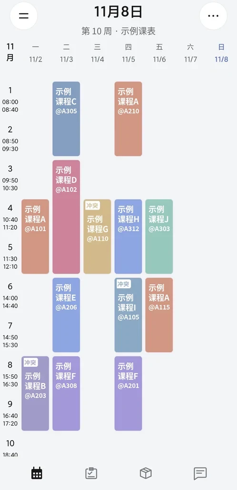
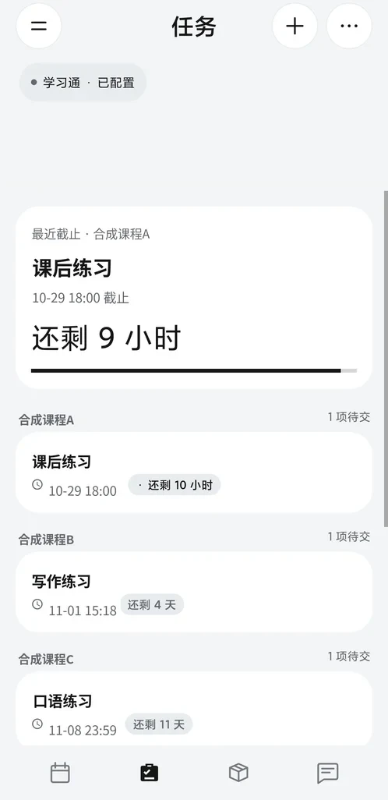
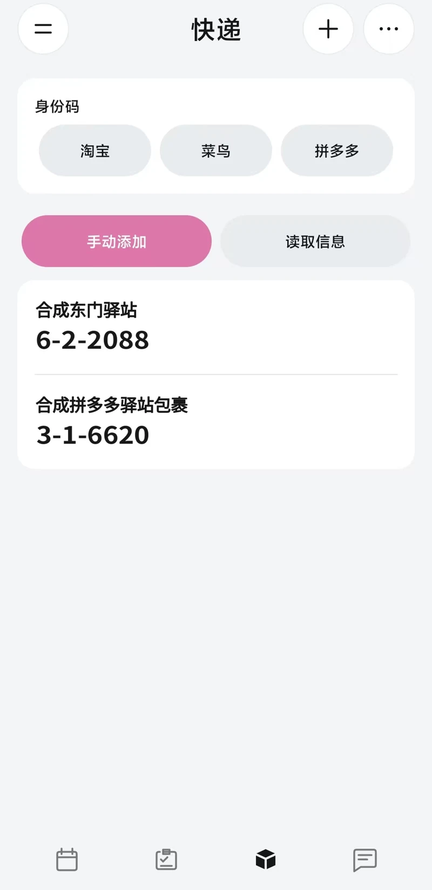
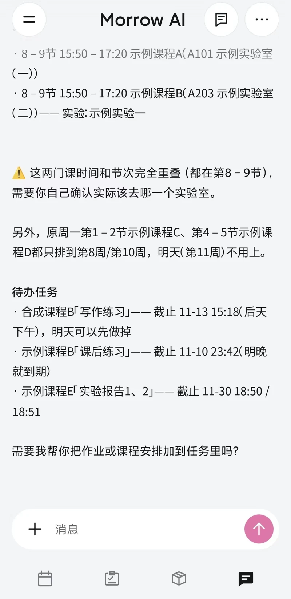

从导入开始
支持宿迁学院、徐州工程学院学校导入，也可以从学校网页导入，或手动建立自己的课表。
为校园日常而作 / Android
下一节课，待完成的作业，路上的包裹。
用 Morrow，把这些小事安放在一处。
Android 8.0 及以上 · 免费开源

功能一览
从早课到晚自习，从作业截止到快递取件。
让分散的安排，有一个清晰的去处。
任务 / Tasks
手动记下待办，或连接学习通同步作业。按课程整理，把截止时间放在眼前。

快递 / Parcels
手动添加或粘贴取件信息，集中查看取件码。还可按需开启通知识别，直达官方身份码入口。


AI 助手 / Assistant
“帮我看看，
明天有什么安排？”
在对话里梳理课程与任务，也可以带上图片或文件继续聊。支持自定义 API、项目与记忆管理。
课程冲突会提醒，添加或修改安排前会请你确认。重要信息，仍由你做最后核对。
需自行配置 AI 服务；对话与附件由所选服务商处理。
课表、任务和快递数据保存在本机。学校与学习通账号密码在验证成功后使用 Android Keystore 加密保存，用于对应平台的验证与刷新。同步失败保留已有数据。
通知识别默认关闭，需要应用内同意和系统授权；只解析选定来源，不保存通知全文，不读取短信数据库。桌面显示取件码需单独开启。
公告和更新服务不接收课表、账号或密码。徐州工程学院当前教务入口使用 HTTP；密码按学校协议加密，但账号、课表和会话传输不受 HTTPS 保护，请在可信网络中同步。
课表不会通过系统备份自动迁移。更换手机、卸载或清空数据前，请在“设置 → 数据管理”导出加密备份，并妥善保存密码。备份不包含账号密码、API 密钥、AI 聊天与网页登录状态。
AI 对话需配置 API 服务。发送的消息及所选附件会交给配置的服务商处理，请在发送前确认内容。AI 给出的课程和任务建议请核对；数据变更需确认后执行。
完整隐私说明